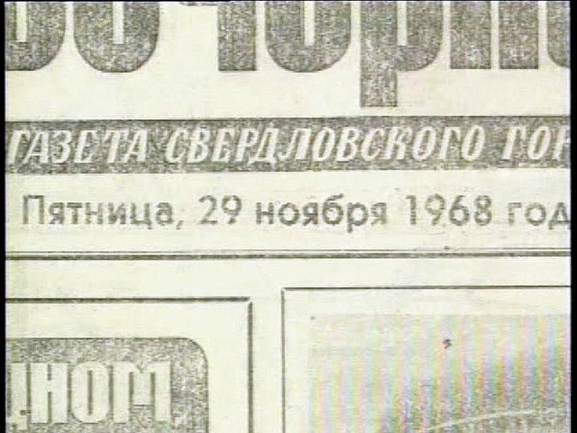

Le est diffusée pour la 1ʳᵉ fois sur la chaîne TNTChaîne américaine affiliée à CNN une
émission sur les dossiers secrets ovnis du KGB"The Secret KGB
UFO Files", TNT, 20:00, 1998-09-13. C'est un programme de 90 mn produit par ATI présenté par Roger Moore. Plusieurs experts russes et
américains sont interrogés, dont Antonio Huneeus Huneeus, Antonio : "Kidding Gullible Believers: The Truth Behind the 'KGB UFO Files'", Fate magazine, janvier 1999
et un certain V. G. Vereschagin dont personne ne semble avoir entendu parler, du moins hors de Russie,
présenté comme auteur d'un livre sur les ovnis en URSSUFOs in the USSR, introuvable - Supposé
relater l'histoire du crash.
Roger Moore présentant l'émission
Au début du film, un message apparaît : Ce que vous allez voir pourrait être vrai ou nonOberg, James E. : "TNT's
The Secret KGB UFO Files", CSICOP.
Dans la 1ʳᵉ partie de l'émission, Vereschagin explique que de nombreux habitants de la région de Sverdlovsk ont vu
des lumières survoler leur village et ont entendu une explosion le .
Il indique que la presse locale a relaté l'évènement, au travers d'un article traitant le crashde boules lumineuses volantes dans la
forêt voisine et la mise en "alerte" du KGB. Le reportage montre un extrait du journal
en question, sur lequel on peut lire la date du et une partie du nom du journal :
Vecherny Le nom complet sera Vecherny Sverdlovsk. On a par la suite accusé
Vereschagin de ne pas pouvoir donner la preuve de cette publication.

La page présentée comme celle du journal local
Mais Vereschagin n'est que le "traducteur" de l'affaire. L'émission indique que le film a été "vendu" pour 10000 $
par Pavel Alexandrovich Klimchenkov, présenté un ancien officier du KGB, carte
officielle à l'appui. Ce dernier, interviewé, indique qu'il s'agit d'une "fuite" délibérée, et que le nom de code de
recherche et récupération d'un ovni était "mif" ("mythe", en russe).
S'ensuit la diffusation d'un film 16 mm montrant une soucoupe apparemment écrasée dans les bois près de Berezovsky, dans la
région de Sverdlovsk (anciennement Yekaterinbourg, près de Berezovsky) en URSS . Le
film n'aurait été pris que le 24 mars, après que des fermiers de la région ont trouvé d'étranges débris et contacté
le KGB. Après la découverte d'un disque écrasé, des troupes soviétiques auraient été
appelées et des cadreurs du KGB auraient filmé l'activité des troupes.
Les corps d'humanoïdes récupérés auraient été envoyés en un lieu sûr de Moscou et estampillés sous le label "le
nain de Sverdlovsk" (Sverdlovsk midget). Le KGB aurait pensé au
début avoir affaire à un avion espion américain ou anglais, mais après avoir analysé les matériaux, aurait compris
que l'engin ne pouvait pas avoir été fabriqué sur Terre.
3ᵉ partie : l'autopsie
Image extraite du "film du KGB"
S'ensuit le film d'une autopsie de cadavre humanoïde par 3 médecins : Gordeenko, Kamyshov et Savitsky, du
Département Anatomique du 3ᵉ Institut Médical de Semashko, à Moscou (Russie). Le film est
en couleur et les spécialistes qui dissèquent le thorax mutilé de l'extraterrestre portent des blouses blanches et
des gants pendant l'examen.
Image extraite du "film du KGB"
Le bâtiment où est effectuée l'autopsie est un ancien laboratoire biologique secret de l'état devenu aujourd'hui un
institut privé. On a découvert que le "docteur" Savitsky qui se trouve dans le document était
bien étudiant à l'époque des faits. Le programme nous montre ensuite les certificats de décès des 3 médecins (qui
n'ont pu être authentifiés par les enquêteurs sur le dossier) et qui montre qu'ils sont tous les 3 morts
d'hémorragie cérébrale.
À la fin de l'émission, 2 écrans d'avertissement indiquent : Les producteurs rejettent et ne garantissent pas
l'exactitude ou la véracité de la documentation ou des éléments fournis par quelque source... Les éléments et
opinions présentés dans ce programme y compris les documents, films, photos, ou bandes video viennent des sources et
ne sont pas la responsabilité des producteurs... Cette production est produite uniquement à des fins de
divertissement et aucune autre utilisation n'est autorisée.Oberg,
J.: "TNT's The Secret KGB UFO
Files", .
Stanton T. Friedman, après avoir vu le film,
reste perplexe et pense qu'il faudrait enquêter sérieusement sur les uniformes des soldats. Cependant, alors que les
"experts" ayant vu les boîtes du film et examiné les pellicules déclarent penser qu'elles sont authentiques et
correspondent aux standards de l'époque, Bob Shell fait remarquer de son côté que l'on voit les Russes utiliser des
caméras 16 mm, même si les boîtes de film présentées sont du 35 mm.
Hefman
Les couleurs et la nature des uniformes frappent aussi. Elles correspondent aux caractéristiques des films des
années 1960s et Alex Hefman, un homme d'affaires d'origine russe vivant à New York, est tout d'abord fortement
impressionné par l'émission de la TNT. Il commence à analyser le cas et est frappé par certains détails
comme l'absence de boucle de ceinture métalliques chez les soldats, qui ne furent introduites qu'à la fin des
années 1960s. Le camion également, identifié comme un modèle ZIS-151 de , n'est plus en service
depuis longtemps et très difficile à trouver de nos jours. D'un autre côté, les jeeps sont vraiment étranges : en
toute apparence des clônes les Willys MB (1ères jeeps militaires US) de la 2de guerre mondiale, tout en ayant de
sérieuses différences avec elles, comme avec les jeeps soviétiques. La neige semble vierge de toutes traces (ce
qui rend possible une absence de répétition) et les ombres des arbres diffèrent peu au cours du film (laissant
supposer un intervalle de temps relativement cohérent). Ceci étant dit Hefman conclut, non pas définitivement,
mais au moins qu'un canular réalisé par d'autres gens que le KGB doit être absolument exclu."The Secret KGB UFO Files - Independent Evaluation"
Par la suite, Hefman tente de retrouver l'article de journal étayant l'histoire d'un crash. Hefman finit par trouver que le seul
journal de Sverdlovsky Gorkom portant "Vecherniy" dans son nom était le Vecherniy Sverdlovsk. À travers
une série de contacts à Moscow, Ekaterinburg et Perm, il finit par obtenir une copie du numéro du
... qui ne ressemble en rien à celui montré dans l'émission télévisée. Aucune mention
d'observation d'ovni ou d'explosion. Il s'étonne aussi que les principaux protagonistes nommés, le "vendeur" du
film et le "traducteur", n'ait pas été inquiétés, notamment par le successeur du KGB. Il contacte alors le 3ᵉ Institut de Stomatologie Médicale imeni Semashko, la
seule institution de ce nom, à l'exception de l'hopital d'enfants, qui lui répond ne jamais avoir eu d'adjoint
nommé "Decan Tolmakov". Hefman écrit enfin aux producteurs pour leur faire part de sa suspicion. Ils refusent de
lui fournir toute information et revendiquent accessoirement tout copyright sur les films présentés, pourtant
censés appartenir à d'autres. Bien que menacé de poursuites par la société de production, il parvient à entrer en
contact avec une personne ayant participé à la production du film, qui lui confirme le canular. En il finit par déclarer que le film et les
documents sont un canular très élaboré. Il finira cependant par retirer
son site web, craignant les menaces de poursuites de la production.
En fait (?), les membres d'une équipe de producteurs de télévision américaine auraient
déclaré avoir réalisé le film en question par appât du gain. Ils auraient engagé des comédiens à Moscou, acheté des
uniformes de , fabriqué une soucoupe en mousse plastique et monté quelques prises dans la forêt
Shurinov, Boris : "Secret KGB UFO
Files - the real story", 2001-01-30.
C'est que le film aérien de la première partie sera révélé être une version retouchée du
documentaire "Russian Top Gun".